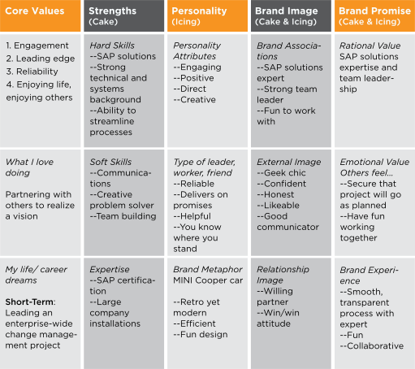
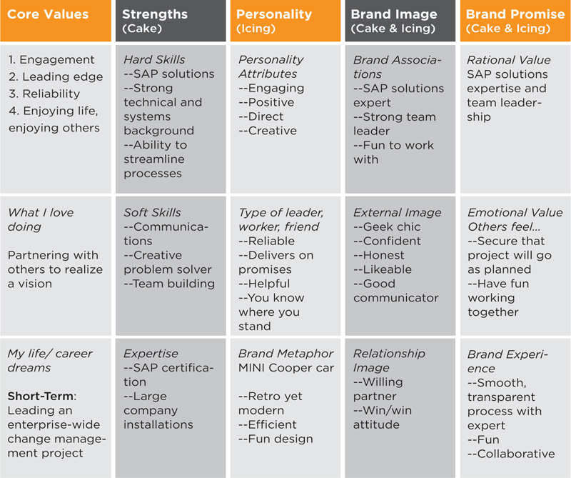
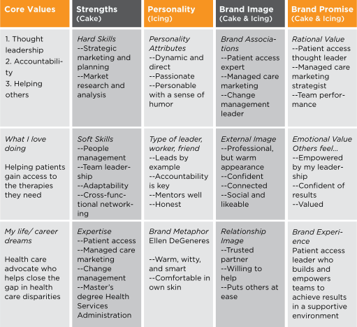
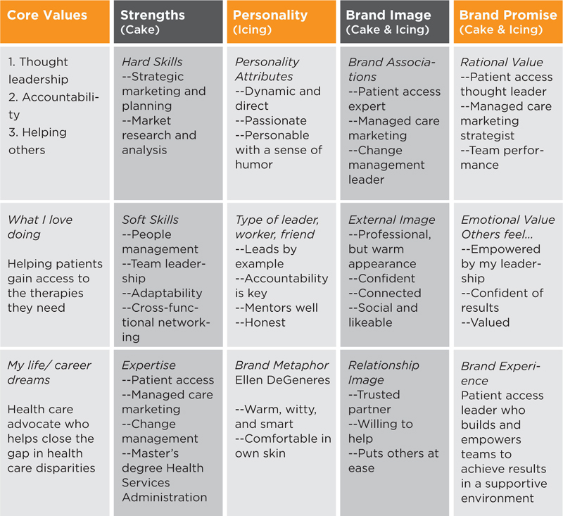

Sample Brand Strategy Platform for a Systems Engineer
Goal: Lead enterprise-wide change management project
Figure 4.11
Desired Brand for Systems Engineer
 
In this example, our systems engineer has developed a brand strategy that can best be summarized by these key brand descriptors:
He could be known as solely an information technology resource, but he has positioned himself as an SAP solutions expert, which is more specific and answers a need of groups that require SAP systems development. He further stands out because technical people are not always strong team leaders who communicate well. Under Brand Experience, he has put an asterisk after “smooth, transparent process” because he needs to work on making the SAP development process more transparent to his inside clients. As he rebrands as the SAP solutions expert, it is likely that he will earn his opportunity to do an enterprise-wide change management project on the SAP platform.
Sample Brand Strategy Platform for a Health Care Executive
Goal: Move from position in marketing to patient access
Figure 4.12
Desired Brand for Health Care Executive
 
The key brand descriptors for Pamela, who we met in chapter 2, are:
After identifying her strategy, Pamela worked on being known as a patient access expert, upgraded to a more professional look and scheduled time to be more “social,” so she could connect better with her staff and colleagues. She rewrote her résumé so that it communicated that she was a patient access expert, not only in the headline and summary, but also in the detailed proof points. Her brand focus and implementation helped executive management to recognize her value outside of marketing. She quickly achieved her goal of moving into a new executive role in patient access. The following is an example of what she might have included in her desired brand strategy.
Tips to Complete Your Brand Strategy Platform
Start by capturing a snapshot of your current brand in the Brand Strategy Template. You can start with your own perceptions. However, it is helpful to augment your self-view with objective input from 360 assessment data, informal talks with others about their perceptions, or having stakeholders fill out the Personal Branding Assessment Questionnaire in chapter 1.
Next, write your goal at the top of the Brand Strategy Platform. Fill out the template again with a desired brand that will help you to reach your career or business goal. Revisit your positioning statement to understand the needs of your target audience.
Use bullet points and keep your language brief when filling out this template. Less is more. For example, you will be able to remember three core values, but you might not remember six.
On your Desired Brand Platform, do a quick comparison of where you want to go versus where you are today. Asterisk the areas that need work. We’ll address what to do about these gaps in your Action Plan (chapter 6).
Completing your Brand Strategy Platform may require that you think about yourself in a way that you have never done before. Some people fill out this template and realize that they are in the wrong job or career, while others realize that they are in the right job and feel reenergized about their commitment to it. Whatever your case, the Brand Strategy Platform will give you a holistic view of your brand that will make you think, and, one hopes, give you the confidence to take action.